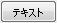
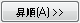
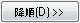
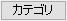
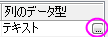

- フォーマットボタン

の横にある三角形のボタン をクリックし、フライアウトメニューでフォーマットのいずれかを選択します。または、
をクリックし、フライアウトメニューでフォーマットのいずれかを選択します。または、
フォーマットボタンをクリックして行のフォーマットダイアログを開きます。 - その後、ラベル行を階層（ネスト）ソートの基準パネルに追加します。
このツールは、ワークシートラベル行の値を基準に列を並べ替える機能です。複数の列ラベル行を基準にして、入れ子の並べ替えを行うこともできます。
ダイアログを開く方法は以下の2通りあります。
このダイアログでは、有効なラベルパネルで列ラベル行を選択し、昇順または降順ボタンをクリックすると、基準として階層（ネスト）ソートの基準パネル に追加されます。追加後に、書式などをカスタマイズできます。複数の基準を追加することも可能です。
選択したワークシートのラベル行に欠損値がある場合、対応するラジオボタンを選択することで、それらを 最小値 または 最大値 として扱うことができます。
このパネルには、使用可能なラベル行が表示されます（ロングネーム、単位、コメント、パラメータ、サンプリング間隔、ユーザ定義パラメータなど）。
有効なラベルパネルでラベルを選択し、昇順   
また、階層（ネスト）ソートの基準パネルにラベルを追加するときに、行の書式を指定できます。
|
Note:
|
ラベル行には、テキスト、数字、カテゴリ、時刻、日付を指定できます。ラベルを基準に並べ替える場合は、フォーマットを正しく設定しておく必要があります。

の横にある三角形のボタン
をクリックして行のフォーマットダイアログを開きます。| フォーマット | ラベル行の形式を指定します（テキスト、数値、時間、日付）。 |
|---|---|
| 表示 | 時間または日付形式を選択すると、このドロップダウンリストが表示されます。列のデータを表示する形式を決めます。 |
| カスタム表示 | 表示ドロップダウンリストでカスタム表示を選択すると、このコンボボックスが表示されます。日付または時間の形式をカスタマイズできます。 |
ラベル内に欠損値がある場合、列を並べ替える際にそれらを 最小値 または 最大値 として扱うことができます。
選択した列またはワークシート全体のいずれかを選び、並べ替えを実行できます。
|
Note: 列を選択せずに、メインメニューのワークシート: ラベルで列をソートからこのダイアログを開いた場合、デフォルトでワークシート全体 が選択され、このオプションはグレー表示になります。 |